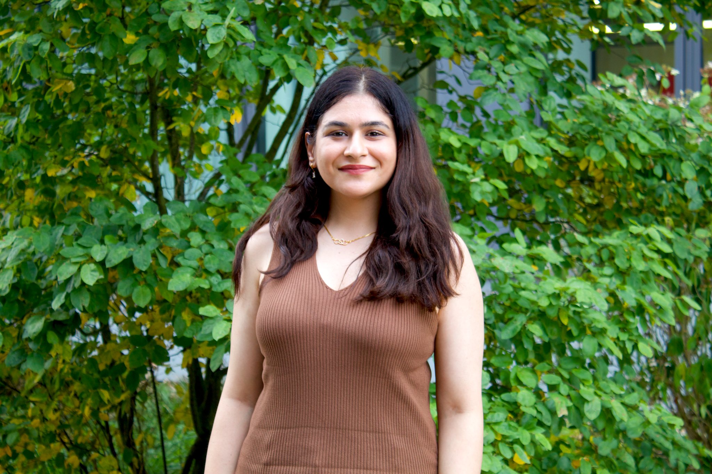

Materials Scientist & Electrochemist
Electrocatalysis · Sustainable Energy Materials · Nanostructured Materials
Designing and understanding functional materials for electrochemical energy conversion, with experience spanning hydrogen evolution, oxygen evolution, sustainable material synthesis and electrochemical sensing.

Research at the interface of materials and electrochemistry.
I am a materials scientist and electrochemist with a PhD in Materials Science, working at the interface of nanostructured materials, electrochemistry, and sustainable technologies. My research journey began with environmental remediation, where I developed functional nanomaterials for the removal of pollutants from contaminated water. During my PhD, my research evolved toward electrocatalysis, with a major focus on designing and surface-engineering transition-metal sulphides for efficient hydrogen evolution. Beyond HER, I have worked with a diverse range of functional materials, including metal borides, metal oxides, perovskites, and heterostructures, exploring their applications in oxygen evolution, ethanol oxidation, chlorine evolution, field emission, and environmental remediation.
My research experience subsequently expanded into electrochemical sensing through the development of an electrochemical platform for detecting OATB antibodies during my postdoctoral research at Panjab University. More recently, my postdoctoral training at Ruhr University Bochum provided international research exposure and broadened my experience in advanced materials research, including high-entropy materials and synchrotron data processing. Across these different research areas, I am interested in understanding how material composition, surface modification, morphology, and interfaces can be engineered to improve functional performance.
Research interests
Electrocatalysis & Energy Conversion
Hydrogen evolution (HER), oxygen evolution (OER), ethanol oxidation, chlorine evolution and related electrochemical transformations, with emphasis on catalyst design and electrochemical performance.
Functional & Nanostructured Materials
Transition-metal sulphides, metal oxides, metal borides, perovskites, heterostructures and high-entropy materials, with emphasis on morphology, surface and interface engineering.
Sustainable Materials & Environmental Remediation
Waste-to-wealth strategies, recovery and conversion of waste-derived materials into functional catalysts, and nanomaterials for pollutant removal and water remediation.
Electrochemical Sensing
Development of electrochemical sensing platforms and functional nanomaterials for diagnostic applications, including electrochemical sensing of OATB antibodies.
Research journey
Selected publications
For the complete publication record, see Google Scholar or the downloadable CV.
Techniques & capabilities
Characterization
Electrochemistry & Materials
Connect
I am interested in research opportunities and collaborations in electrocatalysis, sustainable energy materials and functional nanomaterials.